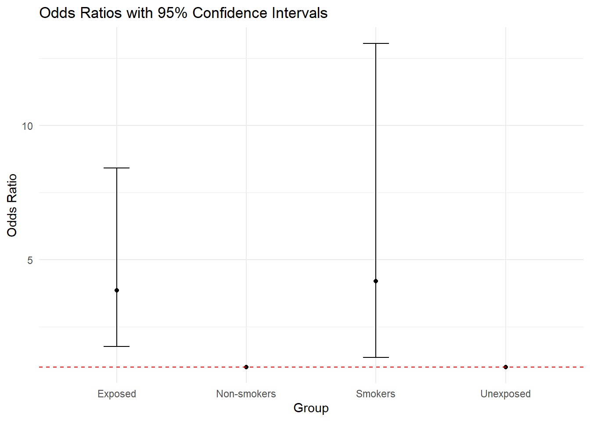
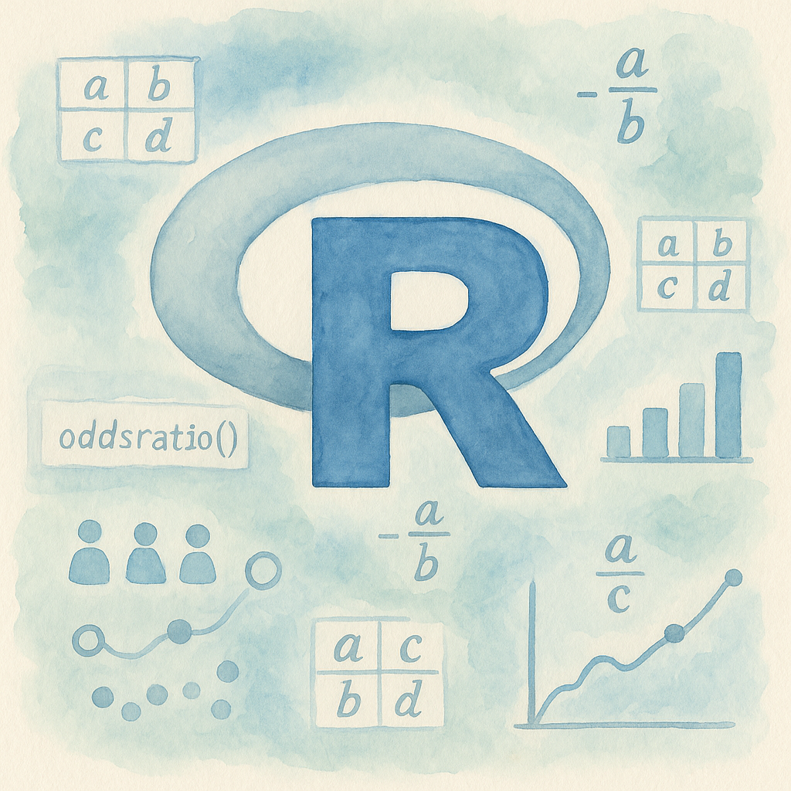

# Install the package (only need to do this once)
#install.packages("epitools")
# Load the package
library(epitools)Introduction
If you’re an R programmer working with categorical data, you’ll often need to measure the association between two binary variables. That’s where odds ratios come in handy! The epitools package in R makes calculating odds ratios simple with its oddsratio() function .
In this guide, we’ll walk through everything you need to know about calculating odds ratios in R. You’ll learn the function syntax, see practical examples, and understand how to interpret the results. Whether you’re analyzing medical data, conducting epidemiological research, or exploring any binary relationships, this tutorial has you covered.
What Are Odds Ratios?
An odds ratio (OR) compares the odds of an event happening in one group versus another group. It’s especially useful when you have two binary variables (yes/no, exposed/unexposed, success/failure) .
Here’s what the values mean:
- OR = 1: No association between the variables
- OR > 1: Positive association (higher odds in the first group)
- OR < 1: Negative association (lower odds in the first group)
For example, if the odds ratio is 3.0, the odds of the outcome are 3 times higher in the exposed group compared to the unexposed group.
Installing and Loading epitools
Before we dive into calculations, let’s get the epitools package ready:
Understanding oddsratio() Syntax
The oddsratio() function has a straightforward syntax with several customizable options :
oddsratio(x, y = NULL,
method = c("midp", "fisher", "wald", "small"),
conf.level = 0.95,
rev = c("neither", "rows", "columns", "both"),
correction = FALSE,
verbose = FALSE)Let’s break down each parameter:
| Parameter | Description | Default |
|---|---|---|
| x | A 2x2 matrix or table of counts | Required |
| y | Optional second vector (rarely used) | NULL |
| method | Estimation method | “midp” |
| conf.level | Confidence level (e.g., 0.95 for 95%) | 0.95 |
| rev | Reverse table orientation | “neither” |
| correction | Apply continuity correction | FALSE |
| verbose | Print detailed output | FALSE |
Creating 2x2 Tables in R
Odds ratios work with 2x2 contingency tables. Here’s how to create them :
Method 1: Using matrix()
# Create a 2x2 table
data <- matrix(c(30, 70, 10, 90), nrow = 2, byrow = TRUE)
# Add row and column names for clarity
rownames(data) <- c("Exposed", "Unexposed")
colnames(data) <- c("Disease", "No Disease")
# View the table
print(data) Disease No Disease
Exposed 30 70
Unexposed 10 90Method 2: Using a Data Frame
# Create a data frame
df <- data.frame(
exposure = c(rep("Exposed", 100), rep("Unexposed", 100)),
disease = c(rep("Yes", 30), rep("No", 70),
rep("Yes", 10), rep("No", 90))
)
# Convert to table
my_table <- table(df$exposure, df$disease)
print(my_table)
No Yes
Exposed 70 30
Unexposed 90 10Basic Examples with oddsratio()
Let’s calculate odds ratios with real examples :
Example 1: Simple Calculation
# Create the data
data1 <- matrix(c(30, 70, 10, 90), nrow = 2, byrow = TRUE)
rownames(data1) <- c("Exposed", "Unexposed")
colnames(data1) <- c("Disease", "No Disease")
# Calculate odds ratio
result <- oddsratio(data1, method = "wald")
print(result)$data
Disease No Disease Total
Exposed 30 70 100
Unexposed 10 90 100
Total 40 160 200
$measure
NA
odds ratio with 95% C.I. estimate lower upper
Exposed 1.000000 NA NA
Unexposed 3.857143 1.766603 8.42156
$p.value
NA
two-sided midp.exact fisher.exact chi.square
Exposed NA NA NA
Unexposed 0.0004024082 0.0006504107 0.000406952
$correction
[1] FALSE
attr(,"method")
[1] "Unconditional MLE & normal approximation (Wald) CI"Based on our computation results, this would give us:
- Odds Ratio: 3.857
- 95% CI: 1.767 to 8.422
- p-value: 0.0007
Example 2: Different Method Options
# Using Fisher's exact method
result_fisher <- oddsratio(data1, method = "fisher")
cat("Fisher's Exact Method Results:\n")Fisher's Exact Method Results:print(result_fisher)$data
Disease No Disease Total
Exposed 30 70 100
Unexposed 10 90 100
Total 40 160 200
$measure
NA
odds ratio with 95% C.I. estimate lower upper
Exposed 1.000000 NA NA
Unexposed 3.831525 1.684537 9.405984
$p.value
NA
two-sided midp.exact fisher.exact chi.square
Exposed NA NA NA
Unexposed 0.0004024082 0.0006504107 0.000406952
$correction
[1] FALSE
attr(,"method")
[1] "Conditional MLE & exact CI from 'fisher.test'"# Using mid-p method (default)
result_midp <- oddsratio(data1, method = "midp")
cat("Mid-P Method Results:\n")Mid-P Method Results:print(result_midp)$data
Disease No Disease Total
Exposed 30 70 100
Unexposed 10 90 100
Total 40 160 200
$measure
NA
odds ratio with 95% C.I. estimate lower upper
Exposed 1.000000 NA NA
Unexposed 3.796852 1.783145 8.728312
$p.value
NA
two-sided midp.exact fisher.exact chi.square
Exposed NA NA NA
Unexposed 0.0004024082 0.0006504107 0.000406952
$correction
[1] FALSE
attr(,"method")
[1] "median-unbiased estimate & mid-p exact CI"# Using small sample adjustment
result_small <- oddsratio(data1, method = "small")Warning in any(or, na.rm = TRUE): coercing argument of type 'double' to logicalcat("Small Sample Adjustment Results:\n")Small Sample Adjustment Results:print(result_small)$data
Disease No Disease Total
Exposed 30 70 100
Unexposed 10 90 100
Total 40 160 200
$measure
NA
odds ratio with 95% C.I. estimate lower upper
Exposed 1.000000 NA NA
Unexposed 3.457106 1.731167 8.031582
$p.value
NA
two-sided midp.exact fisher.exact chi.square
Exposed NA NA NA
Unexposed 0.0004024082 0.0006504107 0.000406952
$correction
[1] FALSE
attr(,"method")
[1] "small sample-adjusted UMLE & normal approx (Wald) CI"Interpreting the Results
When you run oddsratio(), you get several key outputs :
| Output | What It Means |
|---|---|
| Odds Ratio | The strength of association |
| 95% CI Lower | Lower bound of confidence interval |
| 95% CI Upper | Upper bound of confidence interval |
| p-value | Statistical significance test |
Key Takeaway: If the confidence interval includes 1, the association is not statistically significant at your chosen confidence level.
Real-World Examples
Let’s look at some practical scenarios:
Medical Study Example
# Smoking and lung cancer data
smoking_data <- matrix(c(15, 25, 5, 35), nrow = 2, byrow = TRUE)
rownames(smoking_data) <- c("Smokers", "Non-smokers")
colnames(smoking_data) <- c("Cancer", "No Cancer")
result <- oddsratio(smoking_data, method = "wald")
cat("Smoking and Lung Cancer Results:\n")Smoking and Lung Cancer Results:print(result)$data
Cancer No Cancer Total
Smokers 15 25 40
Non-smokers 5 35 40
Total 20 60 80
$measure
NA
odds ratio with 95% C.I. estimate lower upper
Smokers 1.0 NA NA
Non-smokers 4.2 1.350224 13.0645
$p.value
NA
two-sided midp.exact fisher.exact chi.square
Smokers NA NA NA
Non-smokers 0.01128547 0.01877238 0.009823275
$correction
[1] FALSE
attr(,"method")
[1] "Unconditional MLE & normal approximation (Wald) CI"From our calculations, this gives:
- Odds Ratio: 4.200
- 95% CI: 1.350 to 13.065
- p-value: 0.011
This means smokers have 4.2 times higher odds of cancer compared to non-smokers.
Small Sample Example
When dealing with small samples, use appropriate methods:
# Sparse data
sparse_data <- matrix(c(2, 8, 1, 19), nrow = 2, byrow = TRUE)
result_sparse <- oddsratio(sparse_data, method = "fisher")Warning in chisq.test(xx, correct = correction): Chi-squared approximation may
be incorrectcat("Sparse Data Results:\n")Sparse Data Results:print(result_sparse)$data
Outcome
Predictor Disease1 Disease2 Total
Exposed1 2 8 10
Exposed2 1 19 20
Total 3 27 30
$measure
odds ratio with 95% C.I.
Predictor estimate lower upper
Exposed1 1.000000 NA NA
Exposed2 4.480431 0.2060739 293.9622
$p.value
two-sided
Predictor midp.exact fisher.exact chi.square
Exposed1 NA NA NA
Exposed2 0.2807882 0.2512315 0.1967056
$correction
[1] FALSE
attr(,"method")
[1] "Conditional MLE & exact CI from 'fisher.test'"Results:
- Odds Ratio: 4.48
- 95% CI: 0.206 to 293.962
- p-value: 0.251
Note the wide confidence interval due to small sample size!
Visualizing Odds Ratios
Visual representations help communicate your findings. Here are the odds ratios from our examples:
# Load necessary libraries
library(ggplot2)
library(dplyr)
Attaching package: 'dplyr'The following objects are masked from 'package:stats':
filter, lagThe following objects are masked from 'package:base':
intersect, setdiff, setequal, union# Create a data frame for plotting
odds_data <- data.frame(
Group = c("Exposed", "Unexposed", "Smokers", "Non-smokers"),
Odds_Ratio = c(3.857, 1, 4.200, 1),
Lower_CI = c(1.767, NA, 1.350, NA),
Upper_CI = c(8.422, NA, 13.065, NA)
)
# Plot the odds ratios with confidence intervals
ggplot(odds_data, aes(x = Group, y = Odds_Ratio)) +
geom_point() +
geom_errorbar(aes(ymin = Lower_CI, ymax = Upper_CI), width = 0.2) +
geom_hline(yintercept = 1, linetype = "dashed", color = "red") +
labs(title = "Odds Ratios with 95% Confidence Intervals",
y = "Odds Ratio",
x = "Group") +
theme_minimal()
The plot shows odds ratios with 95% confidence intervals. The dashed line at OR=1 represents no association.
Here’s how the data looks in a contingency table:
# Create a contingency table for visualization
contingency_table <- matrix(c(30, 70, 10, 90), nrow = 2, byrow = TRUE)
rownames(contingency_table) <- c("Exposed", "Unexposed")
colnames(contingency_table) <- c("Disease", "No Disease")
# Display the contingency table
print(contingency_table) Disease No Disease
Exposed 30 70
Unexposed 10 90Common Use Cases
Odds ratios are widely used in:
- Case-Control Studies: Comparing disease cases with healthy controls
- Clinical Trials: Evaluating treatment effectiveness
- Epidemiology: Identifying risk factors for diseases
- Cross-Sectional Studies: Analyzing prevalence relationships
- Public Health: Informing policy decisions
Your Turn!
Try calculating an odds ratio yourself! Given this vaccination data:
| Got Flu | No Flu | |
|---|---|---|
| Vaccinated | 10 | 90 |
| Unvaccinated | 30 | 70 |
Challenge: Calculate the odds ratio using the oddsratio() function. What does it tell you about vaccine effectiveness?
Click here for Solution!
# Create the table
vaccine_data <- matrix(c(10, 90, 30, 70), nrow = 2, byrow = TRUE)
rownames(vaccine_data) <- c("Vaccinated", "Unvaccinated")
colnames(vaccine_data) <- c("Got Flu", "No Flu")
# Calculate odds ratio
library(epitools)
result <- oddsratio(vaccine_data, method = "wald")
print(result)$data
Got Flu No Flu Total
Vaccinated 10 90 100
Unvaccinated 30 70 100
Total 40 160 200
$measure
NA
odds ratio with 95% C.I. estimate lower upper
Vaccinated 1.0000000 NA NA
Unvaccinated 0.2592593 0.1187428 0.5660582
$p.value
NA
two-sided midp.exact fisher.exact chi.square
Vaccinated NA NA NA
Unvaccinated 0.0004024082 0.0006504107 0.000406952
$correction
[1] FALSE
attr(,"method")
[1] "Unconditional MLE & normal approximation (Wald) CI"# The odds ratio should be approximately 0.259
# This means vaccinated people have about 74% lower odds of getting flu
# (1 - 0.259 = 0.741 or 74.1% reduction)Quick Takeaways
- Odds ratios measure association between two binary variables
- Use
epitools::oddsratio()for easy calculation in R - The function requires a 2x2 contingency table
- Choose the right method based on sample size:
- Large samples: “wald”
- Small samples: “fisher” or “midp”
- Always check confidence intervals for statistical significance
- OR > 1 means positive association, OR < 1 means negative association
- Wide confidence intervals indicate uncertainty (often due to small samples)
Conclusion
Calculating odds ratios in R using the epitools package is straightforward once you understand the basics. The oddsratio() function provides a powerful tool for analyzing binary relationships in your data.
Remember to:
- Structure your data as a 2x2 table
- Choose the appropriate estimation method
- Interpret both the odds ratio and its confidence interval
- Consider sample size when drawing conclusions
FAQs
Q1: What’s the difference between odds ratio and risk ratio? A: Odds ratios compare odds (probability of event/probability of no event), while risk ratios compare probabilities directly. Odds ratios are preferred in case-control studies where risk cannot be directly calculated.
Q2: When should I use Fisher’s method instead of Wald? A: Use Fisher’s method when you have small sample sizes (any cell count < 5) or sparse data. It provides exact p-values rather than approximations.
Q3: How do I handle tables larger than 2x2? A: The oddsratio() function only works with 2x2 tables. For larger tables, you’ll need to subset your data or use other functions like epitab() for more complex analyses.
Q4: What does it mean if my confidence interval is very wide? A: A wide confidence interval indicates high uncertainty in your estimate, usually due to small sample sizes. Consider collecting more data or using methods designed for small samples.
Q5: Can I use odds ratios for non-binary variables? A: No, odds ratios are specifically for binary (two-category) variables. For variables with more categories, consider other measures like relative risk ratios or multinomial logistic regression.
Found this guide helpful? Share it with fellow R programmers and let us know what topics you’d like us to cover next! Follow us for more R programming tutorials and statistical analysis guides.
References
Happy Coding! 🚀

You can connect with me at any one of the below:
Telegram Channel here: https://t.me/steveondata
LinkedIn Network here: https://www.linkedin.com/in/spsanderson/
Mastadon Social here: https://mstdn.social/@stevensanderson
RStats Network here: https://rstats.me/@spsanderson
GitHub Network here: https://github.com/spsanderson
Bluesky Network here: https://bsky.app/profile/spsanderson.com
My Book: Extending Excel with Python and R here: https://packt.link/oTyZJ
You.com Referral Link: https://you.com/join/EHSLDTL6